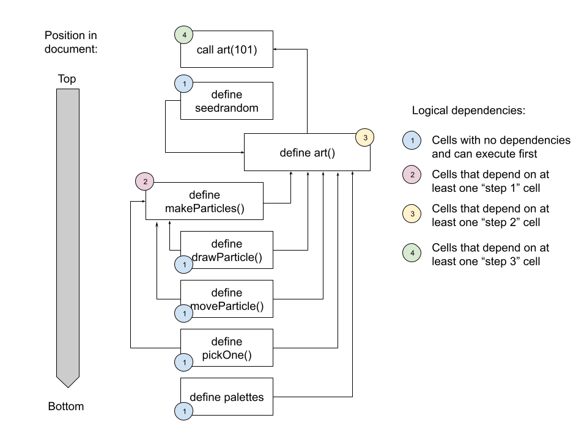

![]()
```{ojs}
//| echo: fenced
1 + 1
```About this time last year I wrote a little blog post about my first attempts to make generative art in javascript with p5.js. Because I was using this quarto-based blog as the vehicle for that exploration, and because quarto supports observable.js as a method for javascript-based computational notebooks – which is slightly different to embedding a js script in a regular webpage – I also talked a little bit about observable. To be honest though I didn’t talk about it very much: at the time I was focused mostly on p5.js, and didn’t really think too much about how observable works.
Lately, though, I’ve been making a few new generative art systems in javascript. The advent and pastiche series I posted to my art site were both written in javascript. In both cases I used node.js to run the js code locally, calling the scripts from the terminal rather than running them in a browser context.
Making art with javascript has been quite a lot of fun, and since it’s been on my mind lately, I thought it might be time to it prompted me take another look at observable in this post. I’m not planning a deep dive or anything, but I will talk a little bit about little art system I made that makes dynamic pieces like this one:
art(100)What is observable, and what’s it doing in quarto?
At its heart, observable.js provides a method for creating computational notebooks that execute javascript code in the context of a document containing regular text, in much the same way that jupyter notebooks execute code cells that contain R, Python, or Julia code, and allow the author to interleave regular text with the code.
I’ll talk more about the code execution and the structure of observable notebooks first, but it helps to start by making a clear distinction between the code execution engine that powers observable notebooks, and the hosted service that most people use when creating one. To see what I mean, notice that most of the time when someone wants to create an observable notebook, they use the hosted service provided by the company which – somewhat confusingly – is also called observable.1 For example, here is a notebook by Allison Horst: it uses the observable javascript library, and it’s hosted on observable service provided by observable-the-company. When people talk about “observable notebooks”, this is the kind of thing they usually mean.
However, this isn’t the only possible approach. You could, for instance, include the observable.js core libraries in a regular webpage (i.e., using the javascript libraries but not the hosted service). Alternatively – and this is the approach I’m taking here – you can create quarto documents that rely on observable to execute javascript code, which is fairly painless to do because quarto provides native support for observable.js. To create an observable-javascript code chunk (“code cell”, in the terminology used by observable), you’d create an {ojs} chunk like this:
Here you can see the javascript code (1 + 1), the output (2), and the quarto syntax used to create the chunk itself (the {ojs} bit), but from now on I’ll drop the quarto syntax.2 The important thing to realise here is that although superficially this page looks rather different to a notebook on the observable hosted service, the underlying “execution engine” is more or less the same.
Code cells execute in logical order
For the most part, the code execution within an observable notebook (or a quarto document like this one that uses observable) follows all the usual syntax for vanilla javascript. You can use a cell to define variables:
msg = "hello world"and you can refer to those variables later:
msgHowever, a key characteristic to observable.js is its reactive runtime engine: much like a spreadsheet, cells are executed in “topological order” based on the logical dependencies among them. For example, the cell below refers to a variable called surprise, and it works even though (reading this document from top to bottom) I haven’t actually defined it yet:
surpriseThis works because, at a later point in this document, there is a code cell that does specify a value for surprise, and observable.js detects that the later cell is the logical precursor to the one above, and executes that cell before this one. It is also the reason why I can call the art() function in the code cell below. Because the art() function is defined later in the document, I’m permitted to call it now, knowing that observable will determine the order in which all the cells need to be executed:
art(101)To unpack this still further, the image below shows all the dependencies of the call to art(101) that occurs in the cell above. As you can see, all of the cells upon which the cell above depends appear lower in the document, but that’s okay, because observable.js uses the logical dependencies (which take the form of a directed acyclic graph) among these cells to determine the order in which they execute:

Loading modules in observable
One of the things about javascript that sometimes gives me headaches is getting used to the numerous different ways you can import javascript code depending on the context in which you’re using the language.
When I first started using javascript in web pages, I didn’t use any external javascript code at all. I’d write an html file that embedded my hand-rolled javascript coded directly into the document, with the code wrapped within a <script> tag:
<script type="text/javascript">
console.log("hello world") // comment
</script>Later, I learned that it was often better to separate the javascript code from the html document, so my web page would contain an .html file and a .js file. Within the html document, I would again have a <script> tag, but instead of including the javascript source code it would reference the .js file:
<script src="./myscript.js"></script>This is the traditional way of using javascript in a webpage. All javascript code that I wanted to use in my webpage would be stored in local copies of the relevant .js files, and I’d include them with <script> tags. However, once I learned about content delivery networks (CDN) like jsDelivr, I started to realise that I didn’t have to have a local copy of all the files: instead, I could import the files I needed through a CDN. A common example of this in the javascript that I used to write during that stage of my life would be to load jquery with code like this:
<script src="https://cdn.jsdelivr.net/npm/jquery@3.7.1/dist/jquery.min.js"></script>Until quite recently, that was essentially everything I knew about loading javascript modules. I’d only ever used javascript in the context of an html document, and in that context it is the .html file that does the work of loading the javascript.
Enter, stage left, the node.js runtime environment for javascript being chased by the node package manager npm. Traditionally javascript is a scripting language used in the context of a webpage, but it doesn’t actually have to be used that way thanks to node.js. Node allows javascript to function as a pure scripting language: you write code in javascript that you can then execute from the terminal without any browser at all. That’s what I’ve been doing with my recent generative art code that uses javascript. For instance, advent_06.js is one of those generative art scripts, and – because I have node installed on my machine – when executing the script I’d use this command at the terminal to create the images:
node advent_06.jsOne question that you’d naturally have, when running javascript in this fashion, is how to import modules: you can’t use a <script> tag for this because there’s no html file and the javascript code is not executing within a browser. To that end node provides a require() function that you can use for this. As I have previously installed the seedrandom.js library (which allows you to create random number generators that give you control over the RNG seed) using npm, I can include a line of code like this in my js script:
// this code is from the advent_06 script, it's not an ojs cell
const seedrandom = require('seedrandom') This creates a seedrandom object that exposes all the functionality of the library, which is then used elsewhere in the script. This works just fine, but it’s important to recognise that require() is not part of vanilla javascript, it’s specific to nodeJS. You can’t use it in vanilla javascript.
…and yet, you can use it with observable.js. This is because observable supplies its own require() function that behaves similarly to the node.js require() function. For this document, I decided to be smart and import a specific version of seedrandom, like so:
// this is the ojs cell that imports seedrandom in this document
seedrandom = require('seedrandom@3.0.5')The key thing to remember here (and I’ll confess this threw me for a loop for a little while) is that although this looks like I’m writing “server-side” code like you’d do with node.js, this calls the observable.js version of the require() function. Per the documentation:
By default, require uses modules published on npm, a service that hosts over 1 million different modules created by thousands of individual developers. Because notebooks run in a web environment, we use another service, jsDelivr, that takes npm’s modules and makes them accessible to browsers.
In other words, when calling the require() function in an observable notebook (or quarto document that uses observable code cells), we’re still relying on a CDN to do the work of importing the javascript modules. The observable require() function abstracts away from the tedious details and means you don’t have to write any html to import from the CDN.
Cells implicitly iterate over generators
So now we turn to the generative art system itself. The core mechanic underpinning the system is that each piece is defined by a large number of “particles” that are drawn onto an html5 canvas. The particles move around over time, changing shape and size as they do, sometimes obscuring one another when they are drawn onto the canvas. This leads to dynamic pieces like this:
art(102)Later on in the document I’ll define a makeParticles() function that returns an array containing many of these particles, each of which is an object that has fields like x, y, size, etc that defines the state of the particle, as well as a .draw() method used to draw said particle to the canvas, and a .move() method to update the location, shape, size, etc for the particle. The details of that don’t matter for the moment. Let’s just assume that this mechanism works, and examine the top-level art() function that creates the pieces:
function* art(seed) {
// setup
const par = {height: 600, width: 900, nrow: 12, ncol: 18}
const rng = seedrandom(seed)
const ctx = DOM.context2d(par.width, par.height)
const pal = pickOne(palettes, rng)
// image
ctx.fillStyle = pickOne(pal, rng)
ctx.fillRect(0, 0, par.width, par.height)
let particles = makeParticles(par, pal, rng)
while (true) {
particles.map(p => {p.draw(ctx); p.move(rng)})
yield ctx.canvas
}
}The key part of this function is that it’s a generator function: it is defined with the function* keyword, and instead of having a return value it has a yield value. Generators (also called iterators) are stateful functions. The first time they are called they execute up to the point that the yield statement is encountered, and then return that value. Any subsequent time the generator is called, it doesn’t start from the beginning: it picks up from where it left off last time, and keeps executing until yield is encountered again. So, in this case, art() is a generator function that yields an html5 canvas object when it is called the first time; later invocations of art() will update the state of the canvas, and then yield the updated canvas as its return value. This provides a natural mechanism for animation: each yield value is, in effect, a frame of the animation.
So far, so good. While I’m not an expert at using generators in vanilla javascript, I grasp the basic idea. The part that is a little peculiar here – and is specific to the reactive runtime used in observable.js – is that nowhere in this document do I appear to be calling the art() generator repeatedly. In vanilla javascript, if I’d defined art() in the way I did in the previous cell and then called art(103), I would get a static canvas that corresponds to the first frame of the animation because I’ve only called the generator once. And yet…
art(103)What’s happening here is that the reactive runtime used in observable.js implicitly iterates over a generator function. The code cell above appears to be invoking the art() generator once (with a seed of 103), but that’s not actually true: what’s really happening is that observable.js calls the generator repeatedly behind the scenes (i.e., implicitly iterates). I haven’t done a deep dive on how this behaviour works yet, but according to the documentation this iteration typically occurs 60 times a second. So that’s what’s happening here.
The workhorse code
Having now discussed everything that is specific to observable.js, all that remains to do is add some code cells that contain the “workhorse” functions for our generative art system. Here’s the makeParticles() function that takes a collection of parameters par, a palette pal, and a random number generator rng as its arguments, and returns an array of particles. Initially the particles are all laid out on a grid, with x coordinates lined up in columns and y coordinates lined up in rows. As the system evolves, these particles are moved around using the move() function, and can be drawn to a canvas using the draw() function:
function makeParticles(par, pal, rng) {
const rowheight = par.height / par.nrow
const colwidth = par.width / par.ncol
const s = Math.min(rowheight, colwidth) * .5
let particles = []
let k = 0
for (let c = 0; c < (par.ncol - 1); c++) {
for (let r = 0; r < (par.nrow - 1); r++) {
particles[k] = {
id: k,
col: c,
row: r,
size: 1 + (s - 1) * rng.double(),
sizemin: 1,
sizemax: s,
width: 3,
x: colwidth * (c + 1),
y: rowheight * (r + 1),
xmax: par.width,
ymax: par.height,
xstep: .3,
ystep: .3,
start: Math.PI * 2 * rng.double(),
length: Math.PI * rng.double(),
turn: .1,
shade: pickOne(pal, rng),
shrink: .005,
draw: function(ctx) {drawParticle(this, ctx)},
move: function(rng) {moveParticle(this, rng)}
}
k++
}
}
return particles
}As you can see, the draw() function for any given particle is just a call to the drawParticle() function, and similarly the move() function is just a call to moveParticle(). Here’s those two functions, each defined in their own code cell:
function drawParticle(p, ctx) {
ctx.fillStyle = p.shade
ctx.strokeStyle = p.shade
ctx.lineWidth = p.width
ctx.beginPath()
ctx.arc(p.x, p.y, p.size, p.start, p.start + p.length)
ctx.fill()
ctx.stroke()
ctx.closePath()
}function moveParticle(p, rng) {
p.y = p.y + p.ystep * (rng.double() - .5) * p.size
p.x = p.x + p.xstep * (rng.double() - .5) * p.size
if (p.y > p.ymax) p.y = p.y - p.ymax
if (p.x > p.xmax) p.x = p.x - p.xmax
if (p.y < 0) p.y = p.ymax - p.y
if (p.x < 0) p.x = p.xmax - p.x
if (p.size > p.sizemin) {
p.size = p.size - p.shrink * (p.sizemax - p.sizemin)
} else {
p.size = p.sizemax
}
p.start = p.start + p.turn * (Math.PI * 2 * (rng.double() - .5))
}At several points in the code that defines this system, I’ve relied on a pickOne() function that uses a specific random number generator rng to sample a single element from an array. So of course that too needs to be defined as an observable code cell:
function pickOne(items, rng) {
return items[Math.floor(rng.double()*items.length)]
}Finally, in order for the art() function to choose a random palette every time a new piece is created, I need to have an array palettes that defines a bunch of different palettes (I created these palettes by playing around on cooolors.co and saving some that I liked):
palettes = [
["#de9151", "#f34213", "#2e2e3a", "#bc5d2e", "#bbb8b2"],
["#a63446", "#fbfef9", "#0c6291", "#000004", "#7e1946"],
["#ffffff", "#ffcad4", "#b0d0d3", "#c08497", "#f7af9d"],
["#aa8f66", "#ed9b40", "#ffeedb", "#61c9a8", "#ba3b46"],
["#241023", "#6b0504", "#a3320b", "#d5e68d", "#47a025"],
["#64113f", "#de4d86", "#f29ca3", "#f7cacd", "#84e6f8"],
["#660000", "#990033", "#5f021f", "#8c001a", "#ff9000"],
["#c9cba3", "#ffe1a8", "#e26d5c", "#723d46", "#472d30"],
["#0e7c7b", "#17bebb", "#d4f4dd", "#d62246", "#4b1d3f"],
["#0a0908", "#49111c", "#f2f4f3", "#a9927d", "#5e503f"],
["#020202", "#0d324d", "#7f5a83", "#a188a6", "#9da2ab"],
["#c2c1c2", "#42213d", "#683257", "#bd4089", "#f51aa4"],
["#820263", "#d90368", "#eadeda", "#2e294e", "#ffd400"],
["#f4e409", "#eeba0b", "#c36f09", "#a63c06", "#710000"],
["#d9d0de", "#bc8da0", "#a04668", "#ab4967", "#0c1713"],
["#012622", "#003b36", "#ece5f0", "#e98a15", "#59114d"],
["#3c1518", "#69140e", "#a44200", "#d58936", "#fffb46"],
["#6e0d25", "#ffffb3", "#dcab6b", "#774e24", "#6a381f"],
["#bcabae", "#0f0f0f", "#2d2e2e", "#716969", "#fbfbfb"],
["#2b4162", "#385f71", "#f5f0f6", "#d7b377", "#8f754f"]
]Oh, and yeah… it’s not part of the generative art system, but because earlier on I referenced a surprise variable in order to illustrate the “spreadsheet-style” code execution order in observable, I’d better have a cell that actually defines that variable:
surprise = "a variable defined at the bottom of the document"And we are done!
art(104)Footnotes
I realise it’s a small gripe, but I do think it’s a problem when companies create this confusion by conflating the organisation with the product and/or service. For many years it was difficult to distinguish between rstudio-the-company and rstudio-the-IDE. Observable makes this confusion even messier, since we have observable-the-company, observable-the-javascript-library, and observable-the-hosting-service. They’re three different things that all have the same name and it’s a pain to write about.↩︎
This is a little different than what would have happened if I’d used
{js}rather than{ojs}: when you use{js}in quarto, the javascript code is embedded as a script within the html page, rather than executed with observable.js↩︎
Reuse
Citation
BibTeX citation:
@online{navarro2024,
author = {Navarro, Danielle},
title = {Making Generative Art with Observable.js},
date = {2024-01-09},
url = {https://blog.djnavarro.net/posts/2024-01-09_observable-js-art},
langid = {en}
}
For attribution, please cite this work as: